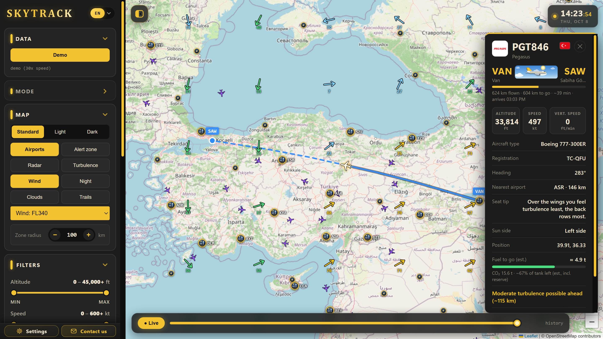

Proje · ~10 dakika
Bir masaüstü uygulamasının dokuz günde nasıl büyüdüğünü, uydurmadan, commit geçmişinden anlatıyorum: AI neyi hızlandırdı, hangi kararları ben verdim, AI nerede yanıldı.
Commit: Kodda yapılan bir değişikliğin kaydı. Her commit'in bir mesajı, tarihi ve yazarı vardır; projenin günlüğü gibi okunur.
1 · Ne yapıyor?

SkyTrack, dünyadaki uçakları haritada canlı gösteren ücretsiz bir masaüstü uygulaması. Windows, macOS ve Linux'ta çalışır; hesap ya da API anahtarı istemez.
ADS-B: Uçakların konumlarını, irtifalarını ve hızlarını saniyede birkaç kez yayınladığı açık sinyal. Gönüllülerin alıcıları bu sinyali toplar; SkyTrack bu açık veriyi kullanır.
2 · Sayılarla
Geri kalan 17 commit: projenin ilk günlerinde elle yaptığım 7 değişiklik ve 10 birleştirme (merge) kaydı.
Claude ile yazılan commit'lerin sonunda Co-Authored-By: Claude satırı var; saydığım şey bu satır.
Ölçüm: github.com/SametDuhan/airock commit geçmişi, 27 Ekim 2026.
3 · Zaman çizelgesi
Bir durağa tıkla:
4 · Bir kararı yakından
Uçaklar acil durumu bir kodla bildirir: 7500 kaçırılma, 7600 telsiz arızası, 7700 genel acil durum. SkyTrack bu kodları kırmızı halkayla gösterir ve bildirim gönderir. Sorunu commit'ler üzerinden satır satır izle:
6 Eki Explain squawk emergency codes (7500/7600/7700) in an in-app dialog6 Eki 0.7.3: only real emergencies (7500/7600/7700 or matching ADS-B status) are shown as emergencies8 Eki Emergencies: a squawk 7500/7600/7700 counts only after 45 s without a break (knob transit no longer fires alerts)Kodu Claude yazdı. Ama "bu alarm neden yanlış?" diye sormak, sebebi bulmak ve 45 saniye gibi bir kurala karar vermek insanın işi.
5 · AI de yanılır
7 Ekim'de fotoğraf görüntüleyicide bir açılış hatası çıktı. Commit mesajı şöyle diyor:
Fix start-up error in the photo viewer (a comment swallowed the rest of a line); test that every script parsesYani yanlış yere konmuş bir yorum, satırın geri kalanını "yorum" hâline getirmiş ve kod çalışmamış. Düzeltmenin ikinci yarısı daha önemli: bütün betiklerin hatasız okunabildiğini sınayan bir test eklendi. Aynı tür hata bir daha sessizce geçemez.
Ders: AI ile hızlı yazınca hata da hızlı gelir. Cevap AI'ı bırakmak değil, test yazdırmak. SkyTrack'in testleri her değişiklikte GitHub'da kendiliğinden çalışıyor.
6 · Kontrol
AI kodda bir hata yaptı ve sen fark ettin. En iyi sonraki adım hangisi?
Düzeltmek bugünkü sorunu çözer; test, aynı sorunun yarın sessizce geri gelmesini engeller. SkyTrack'teki "test that every script parses" commit'i tam olarak bu.
7 · Sen de dene
Tarayıcı demosu, simüle edilmiş uçuşlar ve türbülans alanlarıyla çalışır:
Kodu kendi bilgisayarında çalıştırmak için Node.js 18 ya da daha yenisi gerekir:
git clone https://github.com/SametDuhan/airock.git
cd airock
npm install
npm start
Testleri görmek için: npm test
Bitti